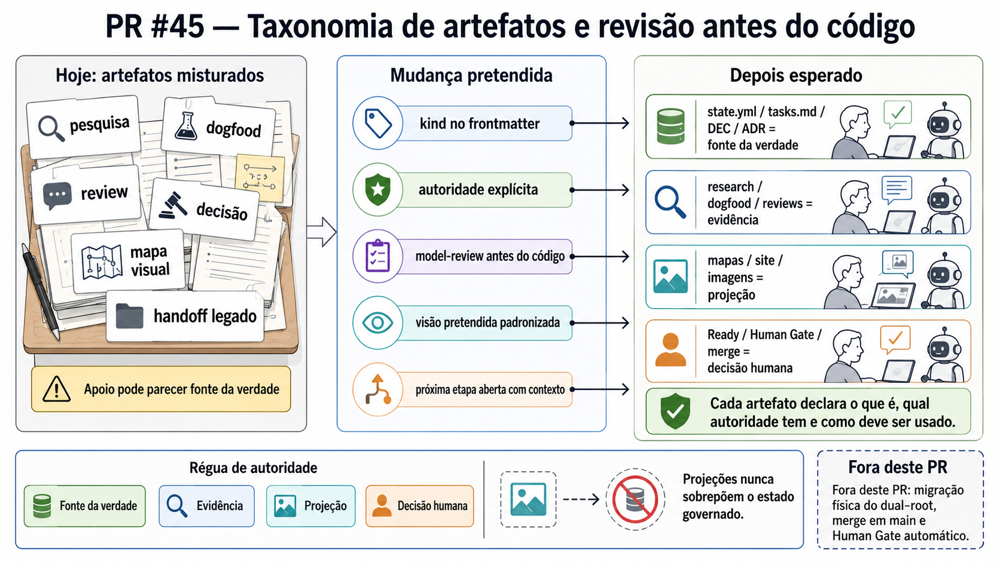

SSpec
O objetivo completo. Aqui: a Spec 0024 inteira.
Mapa V4 · vocabulário governado (DEC-0024-G22) · projeção, não SSOT
Esta V4 projeta o vocabulário governado por DEC-0024-G22: Spec › Frente › Checkpoint › Etapa › Tarefa. "Frente" é o nível acima de checkpoint (substitui a leitura de "nó" e evita reusar "Fase"). As Frentes 0–4 são histórico factual; a partir da Frente 5 há uma proposta ideal e revisável.
state.yml, tasks.md, decision-brief.md,
gates/ e Git/GitHub. Cada checkpoint aponta a sua
casa governada.
A hierarquia é de linguagem humana e opcional: nem todo nível aparece em todo caso.
O objetivo completo. Aqui: a Spec 0024 inteira.
Grande frente sequencial. Rótulo humano de um conjunto ordenado de nós de
state.yml.
Entrega governada e revisável. Normalmente um PR principal claro.
Subdivisão opcional dentro de checkpoint grande (ex-"sub-checkpoint").
Folha executável ou evidência. Não carrega autoridade.
Investigação registrada em
research/2026-06-22-checkpoint-artifact-taxonomy-map-v4-nomenclature-review.md. Medida de colisão no repo (linhas em .md/.yml/.html):
bloco 1058 · fase 543 · camada 201 ·
ciclo 195 · frente 42 (e quase tudo é o idioma "à frente").
"Frente" tem a menor colisão real entre os nomes com sentido de span, já é usado
informalmente no repo (Frente C+D) e é linguagem humana natural.
"Nó" confunde com grafo/topologia; "Frente" é leitura humana, derivada da topologia.
tasks.md já usa "Fase" (Absorção/Review/Encerramento) com outra
granularidade — colisão forte.
Uma Frente = conjunto ordenado de nós rotulado. A SSOT continua em
state.yml § topology.
Frentes 0–4: histórico factual (relabel, sem reescrever decisões). Frente 5: estado atual da continuação com PR #45 ativo. Frentes 6–final: proposta ideal/revisável.
Do bootstrap ao gate inicial de research/decision-brief.
spec.md, plan.md, tasks.md,
decision-brief.md.
state.yml.
No V4 vira "ajuste de vocabulário/topologia"; a numeração histórica é só ponte.
Regras, topologia e reviews viraram superfícies verificáveis.

assets/pr-value-images/pr-33.png.Caso real de um PR carregando 2 checkpoints coesos — separação por valor, não por número do PR.
Base de conhecimento governado, comandos reais e runtime distribuível.

assets/pr-value-images/pr-37.png.Checkpoint que, no modelo ideal, seria quebrado em menores. PRs relacionados explicam a trajetória, não a autoridade.

assets/pr-value-images/pr-38.png.Menos dependência de memória humana entre retomadas, checks e runtime.

assets/pr-value-images/pr-41.png.
assets/pr-value-images/pr-42.png.Lifecycle ponta a ponta modelado; CLI pública como experiência guiada.

assets/pr-value-images/pr-43.png.#43 fechou 2 checkpoints grandes (recorte de convergência); no modelo ideal isso exige explicitar a fronteira de cada entrega no body.
Onde estamos: drift reparável, decisão de modelo e taxonomia/model-review.
repair, tracker, rota avançada, classificação dos 8
drifts.

assets/pr-value-images/pr-44.png. Detalhe em
drift-tracker.html.
DEC-0024-G21, GG-0005, inventários, mapa V2 e
revisões de falsificação.
kind:) e contrato governado
de revisão antes do código.

assets/pr-value-images/pr-45.png. Projeção visual; não
substitui state.yml, DEC, testes ou review.
Tensão reconciliada por DEC-0024-G22: este checkpoint é o nó
topológico ativo em state.yml (sequence: 12); o
comentário que dizia "não é novo nó" foi corrigido.
A direção do simulador de jornadas foi registrada como pesquisa para a etapa
futura broad-flow-falsification; não é implementação do PR #45.
Arquivo:
research/2026-06-23-broad-flow-falsification-direction.md.
Organizar o runtime e provar o lifecycle em jornadas reais antes do gate.
Direção registrada: o simulador deve ser infraestrutura de falsificação com mini-repos/fixtures + runtime real, não uma página manual. A retomada é futura, em PR próprio, após taxonomia e refactor interno.
Depois da continuação modelada e falsificada: remover a raiz legada.
Automatizar só depois que lifecycle, artefatos e raiz canônica estiverem estáveis.
knowledge:health com
decisão humana.
O V3 fundia esta cauda numa frente só; a V4 separa Frente 7 (colapso) de Frente
8 (automação/prontidão) e devolve knowledge-readiness como entrega
distinta.
Homologação final e merge único em main, depois dos gates humanos aplicáveis.
review.md, release-log.md, CI final e gate
terminal.
Não substitui os Human Gates das frentes anteriores e não autoriza merge antecipado (modo unit, ADR 0024).
Um gap descoberto no caminho só pode aparecer no mapa
com uma disposição anexada. Gap sem disposição = débito silencioso,
vetado por GG-0005 (não pode ficar só em research/, backlog ou
memória de agente).
Pequeno e dentro do escopo já em andamento. Vira tarefa do checkpoint ativo.
Amplia um checkpoint grande sem mudar a entrega. Aparece como E Etapa.
É entrega governada própria, revisável e com PR principal. Entra como C Checkpoint.
É uma frente macro nova. Entra como F Frente planejada, com firmeza revisável.
Não vale o trabalho ou está fora de escopo. A rejeição é DEC explícita, não ausência silenciosa.
A decisão (1–5) precisa ser registrada na casa governada. O mapa só projeta o resultado da disposição.
"Fase" já existe em tasks.md (Absorção/Review/Encerramento). A V4 usa
"Frente" para evitar a colisão — agora oficial por DEC-0024-G22. Os
headers legados "Fase de X" ficam como estágios de lifecycle, distintos de "Frente".
sequence: 12 — RESOLVIDO (DEC-0024-G22)
O state.yml estruturava
artifact-taxonomy-and-model-review-contract com
sequence: 12 sob active enquanto um comentário dizia "não é
um novo nó topológico". Reconciliado: #45 É o nó topológico ativo
(seq 12); o comentário foi corrigido. state.yml segue a SSOT estrutural.
Esta V4 propõe uma decomposição ideal (Frentes 7–8 separadas) que ainda não está no
state.yml. Enquanto não houver DEC, a topologia real continua sendo a do
state.yml; a V4 é proposta, não plano.
state.yml/tasks.md como autoridade
Cada checkpoint aponta sua casa governada. Em divergência, vence o governado. O mapa
nunca é editado e relido como fonte — é projeção. Idealmente, uma V5 derivaria isto de
state.yml automaticamente.
Frente adotada como
conjunto ordenado de nós de state.yml, derivada, não autoridade nova. "Fase" rejeitada por colisão.
artifact-taxonomy-and-model-review-contract é nó topológico ativo (seq
12); comentário e estrutura do state.yml reconciliados.
"Fase" rejeitada para agrupamento; os headers legados "Fase de X" no
tasks.md ficam como estágios de lifecycle (histórico), distintos de
"Frente".
Firmeza (firme/revisável) como atributo da cauda; e a implementação da taxonomia/model-review (próximo trabalho do #45). Não decididos aqui.
Investigação de nomenclatura e confronto:
research/2026-06-22-checkpoint-artifact-taxonomy-map-v4-nomenclature-review.md. O vocabulário foi decidido em DEC-0024-G22; esta página o projeta —
não altera topologia e não é SSOT.